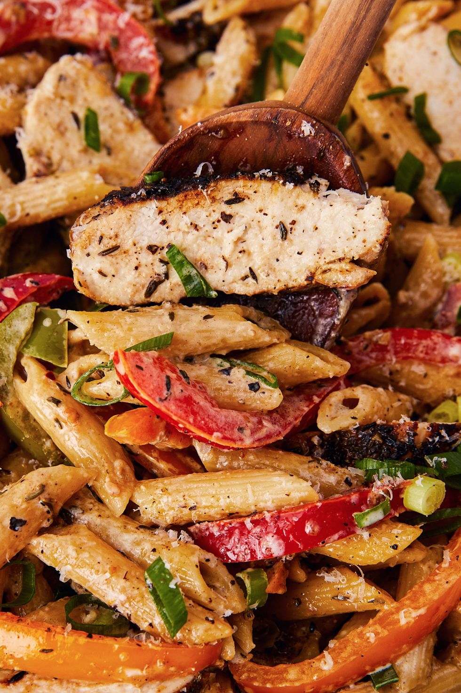

Penne Pasta recipe

Description
This pasta is perfect for the night that you're craving a little bit of everything. It's spicy, it's creamy, there's veggies, there's chicken, there's CHEESE... there's basically no flavor or texture that this dish doesn't have.
It's rare to find a pasta dish with a good level of spice, and the jerk seasoning in this recipe does just that. On a hectic weeknight, it's great having this fun and easy pasta in our back pocket.
Ingredients
- 1 lb. penne pasta
- 3 boneless skinless chicken breasts (about 1 1/2 lb.)
- 2 tbsp. jerk seasoning, divided
- Kosher salt
- 2 tbsp. extra-virgin olive oil, divided
- 1 green bell pepper, sliced
- 1 red bell pepper, sliced
- 1 orange bell pepper, sliced
- /3 c. sliced green onions, plus more for garnish
- 3 cloves garlic, minced
- 1/2 c. low-sodium chicken broth
- 3/4 c. heavy cream
- 1/2 c. freshly grated Parmesan, plus more for garnish
Directions
- Cook pasta according to package instructions to al dente. Drain and set aside. Season chicken breasts all over with 1 tablespoon jerk seasoning and salt. In a large skillet over medium heat, heat 1 tablespoon oil. Cook chicken until golden and no longer pink, 8 minutes per side. Remove from pan and set aside to rest.
- Add remaining oil and cook peppers until mostly tender, 3 to 4 minutes. Add green onions and garlic and cook until fragrant, 1 minute. Season with remaining jerk seasoning.
- Add chicken broth and heavy cream and let simmer until thickened, 5 minutes. Slice chicken. Add Parmesan and stir until melted, then add pasta and chicken and toss until completely combined.
- Garnish with green onions and more Parmesan and serve.